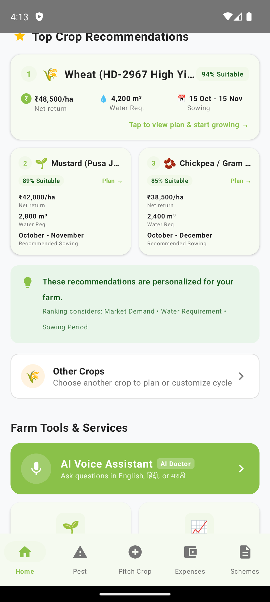
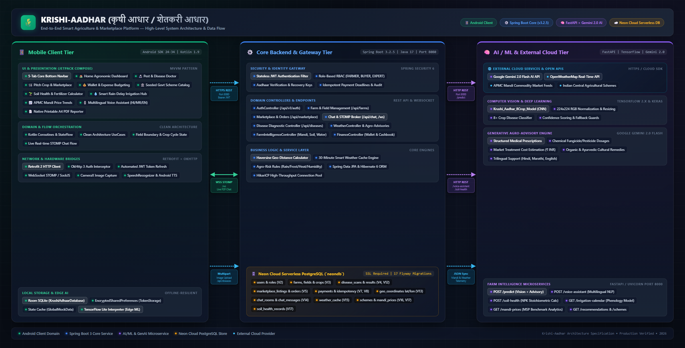
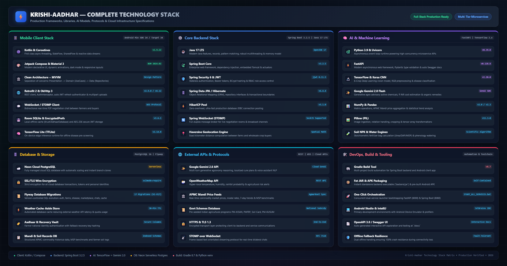
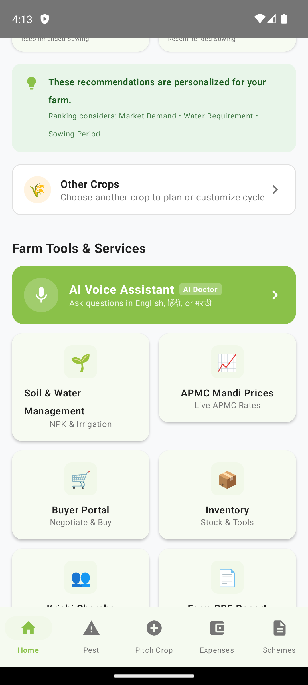
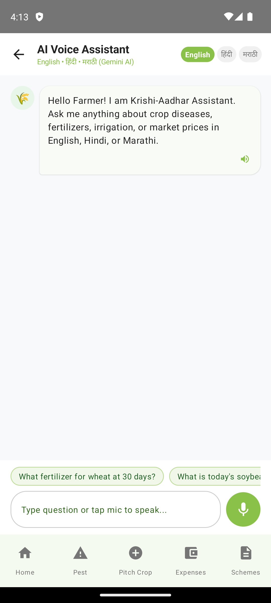
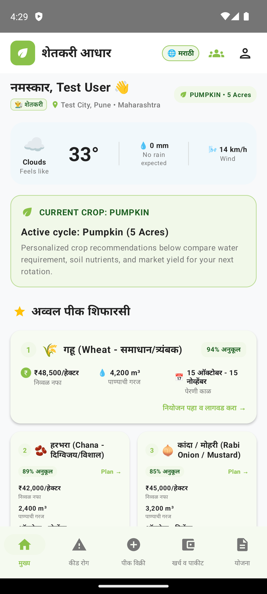
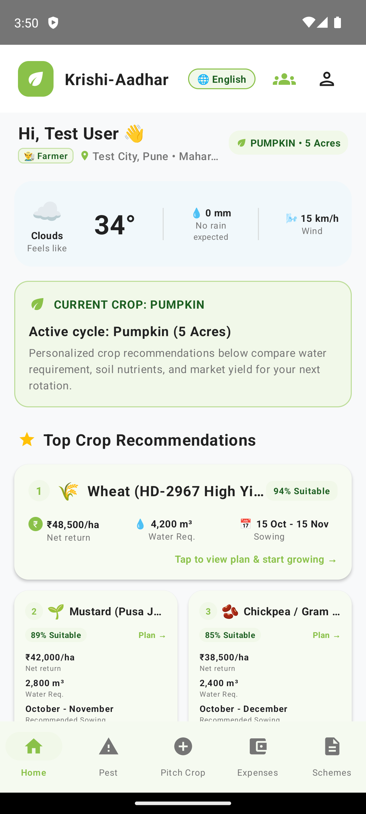

Krishi-Aadhar connects smallholder farmers directly to modern agronomy: instant MobileNetV3 leaf disease diagnosis with CIBRC remedies, live APMC mandi rates with MSP tracking, soil NPK calculators, multilingual voice assistance (मराठी, हिंदी, English), and live peer-to-peer marketplace chat.

From plant pathology to decentralized trade, Krishi-Aadhar solves real operational bottlenecks faced by farmers on the ground.
Snap a photo of leaf symptoms. Our custom-trained MobileNetV3Large CNN identifies 39 disease classes with 98.6% accuracy, paired with Google Gemini 2.0 Flash for biological descriptions.
Built for rural accessibility. Farmers speak naturally in Marathi, Hindi, or English. The assistant transcribes queries, processes agronomic context, and responds via localized Text-To-Speech (TTS).
Eliminate middleman exploitation. Access real-time commodity prices from major agricultural mandis (Kolhapur, Pune, Nashik, etc.) with automated Government Minimum Support Price (MSP) comparisons.
Input soil test results or target acreage. Calculates exact 50kg bag requirements of Urea, DAP, and MOP, alongside agricultural lime/gypsum soil amendments and 3-stage split schedules.
Direct farmer-to-buyer commerce. Features mathematical Haversine GPS radius filtering for localized farm pickups and bidirectional Spring STOMP WebSocket chat for private price negotiation.
Generate professional A4 printable diagnosis reports and financial passbooks directly on device using Android's native graphics engine without needing third-party cloud generators.
Select any sample infected crop leaf to observe real-time AI inference, confidence scores, and ICAR/CIBRC approved treatment guidelines.
Concentric dark brown rings ("bullseye" target spots) on lower older foliage surrounded by chlorotic yellow halo.
Strictly deterministic dosages vetted via ICAR & CIBRC standards (never unverified hallucinations).
Over-fertilization poisons groundwater and wastes thousands of rupees. Calculate your exact crop nutrient balance in commercial 50kg fertilizer bags.
Basal (15%), 30-45 Days (35%), Earthing Up 90 Days (50%)
Never apply 100% Nitrogen at sowing to prevent leaching and volatilization losses.
Soil pH is in optimal balanced range (6.5 – 7.8). No chemical amendment needed.
Track actual agricultural wholesale prices from Maharashtra APMCs compared with official Government MSP.
| APMC Mandi | Commodity | Price Range (Min - Max) | Modal Price | MSP Difference | 7-Day Trend |
|---|
Farmers often cannot type complex chemical names on a keyboard. Our multilingual voice engine enables hands-free voice interaction in Marathi and Hindi.
“माझ्या टोमॅटो पिकावर काळे डाग पडले आहेत, काय औषध फवारावे?”
“टोमॅटो पिकावरील लक्षणे अर्ली ब्लाईट (Early Blight) करपा रोगाची आहेत. यावर रिडोमिल गोल्ड (Ridomil Gold) किंवा मॅन्कोझेब ७५% WP २.५ ग्रॅम प्रति लिटर पाण्यात मिसळून तात्काळ फवारणी करा.”
Behind the friendly user interface lies rigorous mathematical optimization, edge quantization, and distributed cloud microservices.
Standard 2D convolution convolves across channels simultaneously. Depthwise Separable Convolution decouples spatial filtering ($D_K \times D_K$) from cross-channel linear combination ($1 \times 1$).
For $3 \times 3$ convolutional filters ($D_K = 3$), computational overhead decreases by an order of magnitude (8 to 9 times faster on mobile CPUs).
Computes great-circle distance between two GPS coordinates $(\phi_1, \lambda_1)$ and $(\phi_2, \lambda_2)$ on a spherical Earth of radius $R = 6,371\text{ km}$, powering our marketplace radius search.
Provides sub-meter accurate logistic distance without incurring expensive third-party Google Maps billing API calls.
Standard Swish requires evaluating $e^{-x}$, which causes severe integer overflow under int8 quantization. MobileNetV3 formulates a piecewise linear surrogate:
Enables Qualcomm Hexagon DSPs and ARM NEON SIMD instruction sets to evaluate activation layers in 1–2 clock cycles.
Prescribing the wrong agrochemical can devastate an entire harvest. We enforce an uncompromising probabilistic gating check before querying our verified knowledge base:
Ambiguous leaf photos or background noise are safely rejected rather than speculative chemicals being recommended.
Four-tier enterprise decoupling: Android Compose, Spring Boot 3.2.5 Gateway, Neon PostgreSQL, FastAPI ML.

Production-grade technologies selected for latency, resilience, and horizontal scaling.

Modern Material 3 user interface designed for high readability in outdoor agricultural field sunlight.

Quick access to soil analyzer, water scheduler, and crop budget cashbook.

Animated mic recording with instant translation and verbal response.

Complete UI localization supporting regional Maharashtra farmers.

Share field photos, ask questions, and learn from progressive farmers.
Install directly on any Android smartphone. Connects out-of-the-box to live Render cloud backend & ML microservice.
Tap the direct download button above or scan the QR code using your phone camera.
If prompted, enable "Install unknown apps" in Chrome / Files settings for smooth installation.
Open Krishi-Aadhar, select your preferred language (मराठी / हिंदी / EN), and explore.
KIT's College of Engineering Kolhapur (Empowered Autonomous)
Under the expert mentorship of Prof. Komal Jadhav (Project Guide)
Point your smartphone camera to immediately download the 27.1 MB APK.